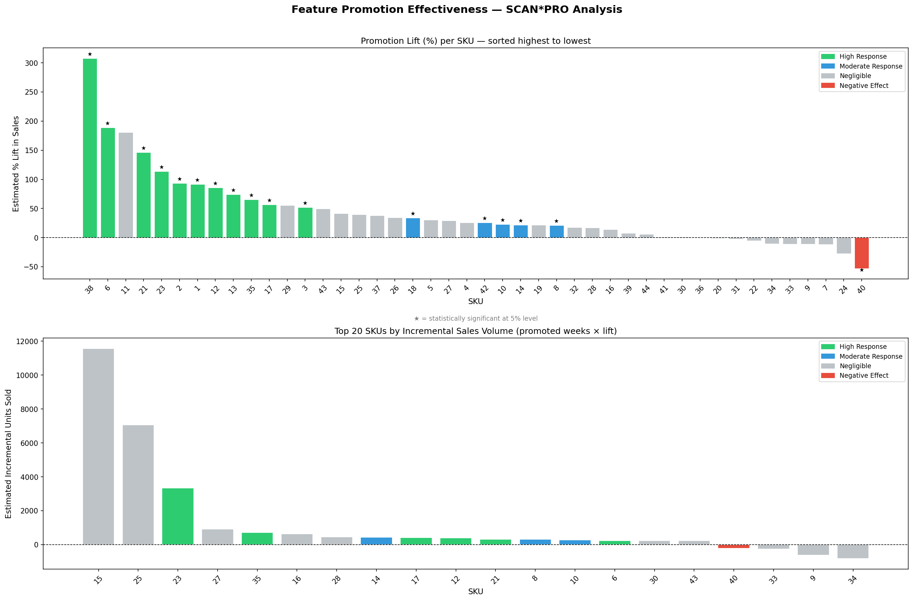
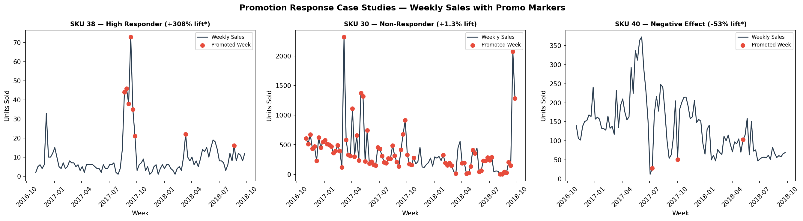
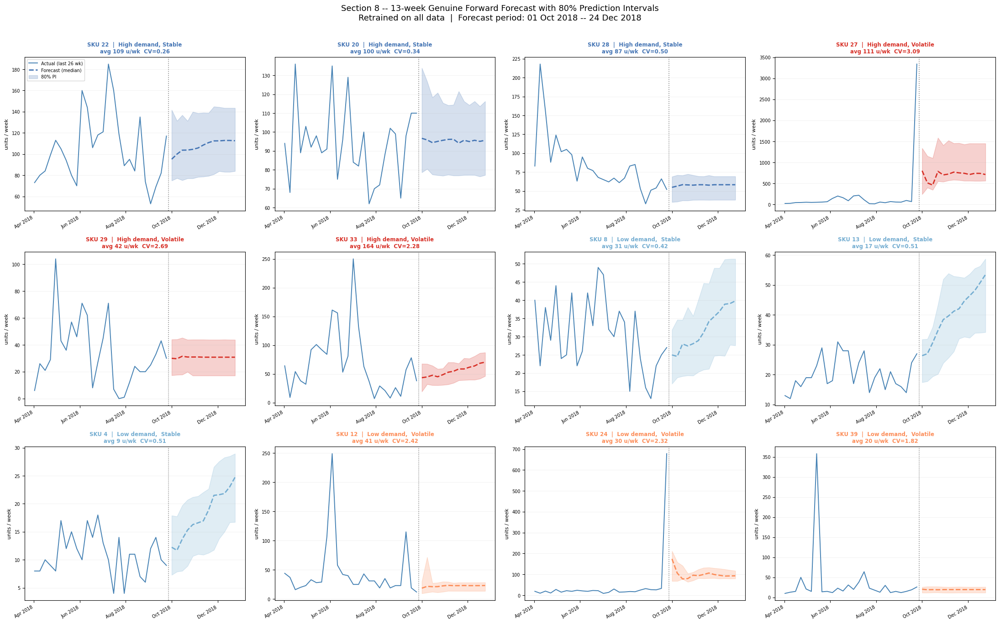

Retail AI Intelligence Suite
Team project. I was technical coordinator — integrating teammates’ demand forecasting, pricing, and promotion-effectiveness analyses into one dashboard — and also did a substantial share of the forecasting work itself (model selection, quadrant segmentation, forward forecasting).
The problem
A team project analysing 98 weeks of sales for a 44-SKU e-commerce electronics catalogue, split across three separate analytical strands (demand forecasting, pricing/promotion effectiveness) that started life as three separate notebooks. The question that mattered to the business: which SKUs need a price change, a promotion, or neither — and what’s the expected impact? Answering that meant putting all three analyses in front of the same person, looking at the same SKU, at the same time — not three PDFs a stakeholder has to cross-reference themselves.
What I built
My role was primarily technical coordination: taking teammates’ separate demand-forecasting, pricing, and promotion-effectiveness work and integrating it into a single three-tab Streamlit dashboard, rather than three disconnected deliverables. I also did a substantial share of the forecasting work directly — model selection across four candidates, the demand-quadrant segmentation, and the final 13-week forward forecast.
- Tab 1 — Marketing Mix Overview: a C-level summary — 2×2 demand matrix, channel attribution, key demand signals.
- Tab 2 — Demand Forecasting: SKU-level operational planning. LightGBM quantile regression producing a 13-week P50 forecast with 80% prediction intervals, per-SKU signal flags (declining / volatile / uncertain), and a catalogue-wide segmentation view.
- Tab 3 — Pricing & Promotion: SCAN*PRO log-linear regression results for all 44 SKUs — per-SKU recommendation cards, elasticity distribution, a portfolio price simulator, and a four-quadrant strategic action matrix.
- AI layer: Llama 3.3 70B (via Groq) grounded in the live dashboard data for natural-language Q&A on both the forecasting and pricing tabs — additive only, every chart and recommendation works fully without it.
Key findings
- Promotion strategy was undifferentiated, and the data shows it: 35.8% of all SKU-weeks were featured on the homepage, but only 16 of 44 SKUs (36%) show a statistically significant positive lift. 27 SKUs show no measurable return at all — feature-slot budget was being spent without regard to whether it worked.
- Scarcity beats frequency. The highest-lift SKUs (38: +308%, 6: +189%, 21: +146%) share a profile of low baseline sales and infrequent featuring — customers respond to featuring as a credible signal precisely because it’s rare. Meanwhile SKUs 30 and 15, featured in 80 of 100 weeks, show essentially zero lift (SKU 30’s effect has p=0.94) — a textbook case of promotion fatigue.
- One SKU actively loses sales when promoted. SKU 40 has a statistically significant negative effect (-53%, p=0.006) — flagged for investigation rather than continued featuring.
- Price is the dominant demand driver, and two feature-importance methods disagreed about it. Random Forest importance ranked discount_pct above the absolute price level; Lasso’s standardised coefficients (which control for collinearity) showed price carrying the largest coefficient in the model by a wide margin. Where the two methods disagree, that’s a modelling question worth resolving, not a footnote — RF’s impurity-based importance systematically understates price here because it’s collinear with the lag features.
- LightGBM was chosen over a neural network despite a marginally worse MAE (62.7 vs. 61.5), because it natively supports quantile regression — P10/P50/P90 intervals without retraining — which the MLP can’t match without significant added complexity. Best relative accuracy (MAPE 50.8%) sealed it.
- Forecast error concentrates in volatile SKUs, not evenly across the catalogue. Roughly 46% of SKUs have a coefficient of variation above 1.0, and a handful of them (25, 27, 30) account for most of the aggregate forecast error — a data reality the model can’t paper over, so those SKUs are flagged for wider intervals and manual review rather than automated action.



Live dashboard
Code
The SCAN*PRO per-SKU regression — one OLS model per SKU, isolating the promotion effect from price and trend:
for sku_id in sorted(df["sku"].unique()):
sku_df = df[df["sku"] == sku_id].copy().dropna(subset=["log_sales"])
sku_df = sku_df.sort_values("week").reset_index(drop=True)
sku_df["trend"] = np.arange(len(sku_df))
X = sm.add_constant(sku_df[["feat_int", "log_price", "trend"]])
y = sku_df["log_sales"]
model = sm.OLS(y, X).fit()
coef, pval = model.params["feat_int"], model.pvalues["feat_int"]
pct_lift = (np.exp(coef) - 1) * 100
baseline = sku_df[sku_df["feat_int"] == 0]["weekly_sales"].mean()
incremental = baseline * (np.exp(coef) - 1) * sku_df["feat_int"].sum()LightGBM quantile regression for the 13-week forward forecast — three models (P10/P50/P90) trained per run, refit on all available data:
for q, label in [(0.10, 'lower'), (0.50, 'median'), (0.90, 'upper')]:
m = lgb.LGBMRegressor(
objective='quantile', alpha=q,
n_estimators=n_trees, learning_rate=0.03, max_depth=6,
num_leaves=40, min_child_samples=10,
subsample=0.8, colsample_bytree=0.8,
reg_alpha=0.1, reg_lambda=0.1, random_state=42,
)
m.fit(X_all, y_all)
full_models[label] = m